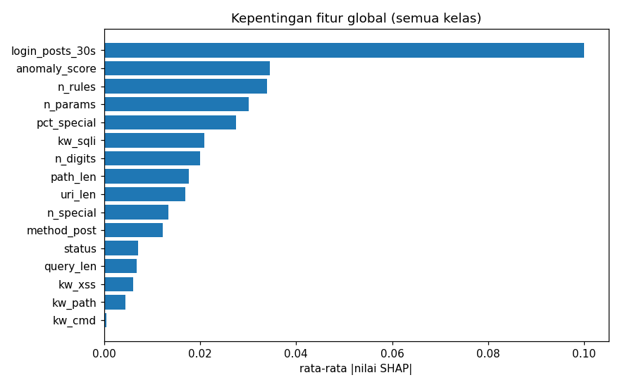
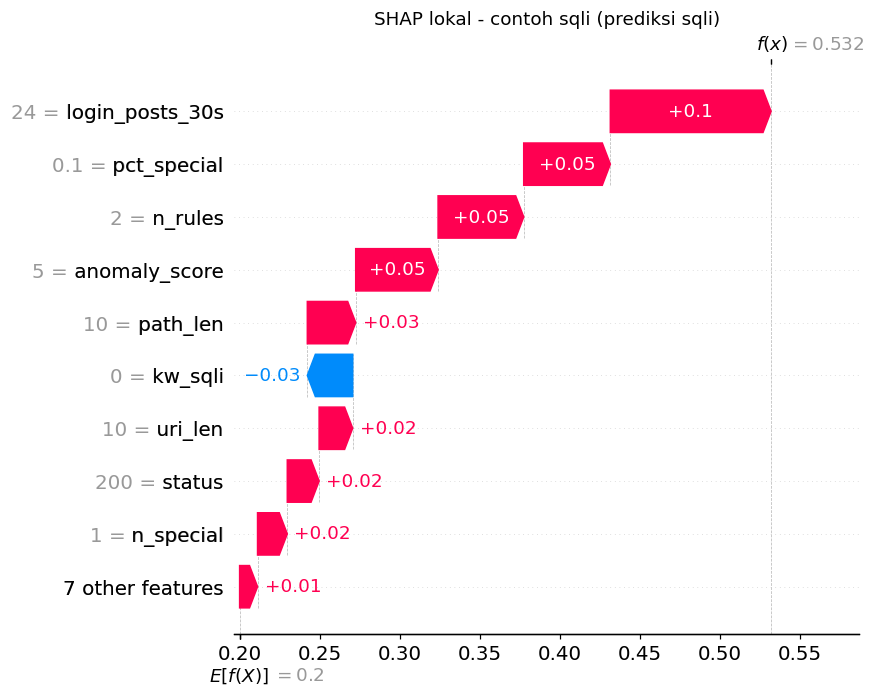
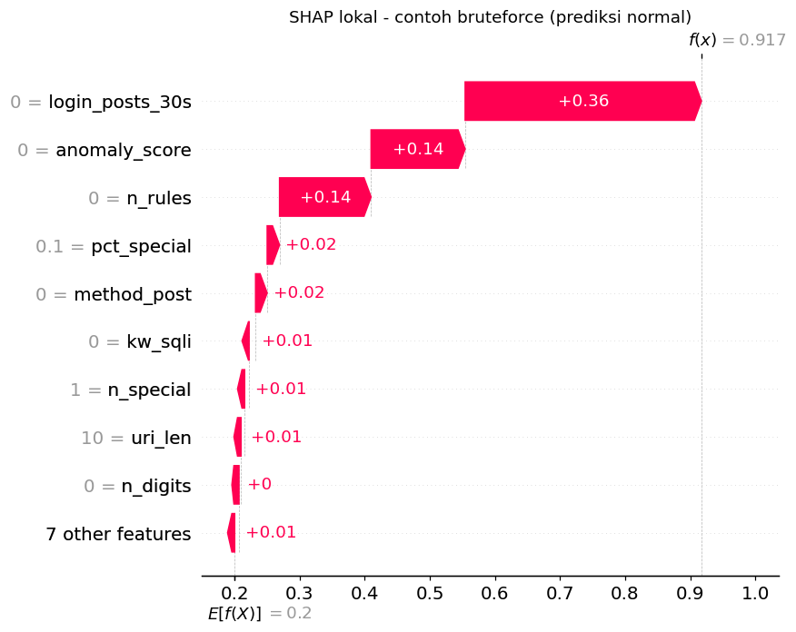

Halo, saya Nur Wahmirudin. Saya menjaga jaringan ISP tetap hidup — dan aman.
Network Engineer & NOC di lingkungan ISP: routing & BGP, MikroTik, FTTH, server dan virtualisasi, serta monitoring jaringan. Sedang menyelesaikan S1 Teknik Informatika dengan fokus keamanan siber dan Explainable AI.
Saya bekerja sebagai Network Engineer dan NOC di ISP. Sehari-hari saya mengelola router core dan pelanggan, sesi BGP dan peering, jaringan FTTH, server layanan pendukung, sampai menangani gangguan.
Saya juga menempuh S1 Teknik Informatika di STMIK "AMIK Bandung". Tugas akhir saya tentang deteksi ancaman dengan Explainable AI, dan cuplikan hasilnya ada di bagian Proyek.
Kebiasaan kerja saya: uji dulu sebelum menerapkan ke produksi, siapkan jalan untuk rollback, dan catat setiap perubahan.
NamaNur Wahmirudin
PeranNetwork Engineer · NOC
BidangISP · FTTH · Routing
PendidikanS1 Teknik Informatika, STMIK "AMIK Bandung" (tingkat akhir)
Merancang ulang router pelanggan dengan tiga uplink ISP: load balancing PCC berbobot, failover otomatis berbasis cek gateway, dan tunnel L2TP agar IP publik tetap stabil saat jalur utama putus.
QoS berbasis aplikasi: video call > sosmed > streaming (deteksi via TLS SNI)
Pemilihan jalur per port / per klien
Hardening: akses manajemen dibatasi, layanan plaintext dimatikan
MikroTik RouterOSPCCL2TPMangle & Queue
Core · Keamanan Jaringan
BGP Peering & Mitigasi DDoS (RTBH)
Mengelola sesi BGP ke upstream dan Internet Exchange, serta menyiapkan filter Remote Triggered Black Hole supaya prefix yang diserang bisa di-blackhole lewat BGP community tanpa mengganggu pelanggan lain.
Routing filter untuk community blackhole
Peering ke beberapa IX dan upstream
Backup & dokumentasi konfigurasi router core
BGPIX PeeringRTBHMikroTik
Server · Virtualisasi
Server & Layanan ISP di Proxmox / Ubuntu
Mengelola server yang menopang operasional ISP: NMS untuk monitoring perangkat, DNS (authoritative & cache), email server, web server, ACS (TR-069), dan server speedtest. Semuanya berjalan sebagai VM di Proxmox VE dengan Ubuntu Server.
Monitoring perangkat, grafik trafik, dan alert gangguan
Backup & restore VM (vzdump), pemulihan saat host bermasalah
Hardening: akses SSH dengan key, firewall, sertifikat SSL
Proxmox VEUbuntu ServerNMSDNSMailNginx / Apache
FTTH · Otomasi
Perubahan Konfigurasi ONT Massal via ACS
Mengubah konfigurasi WAN/VLAN di lebih dari 2.000 ONT pelanggan FTTH dari jarak jauh lewat ACS (TR-069), tanpa kunjungan teknisi. Setiap perangkat dicek dulu, dan perubahan dibatalkan otomatis jika kondisinya tidak sesuai.
Survei model ONT secara paralel dan read-only sebelum eksekusi
Log perubahan (sebelum/sesudah) dan daftar gagal per area untuk tim lapangan
PowerShellFTTH / ONTTR-069
Proyek Infrastruktur
Pendidikan · Kampus
Infrastruktur Jaringan Universitas
Membangun dan memigrasi jaringan kampus: backbone fiber antar gedung, distribusi switch per gedung, segmentasi VLAN (akademik, staf, mahasiswa, WiFi), serta manajemen bandwidth sesuai SLA.
Survei, desain topologi, dan berita acara serah terima
Migrasi tanpa mengganggu layanan yang sedang berjalan
Fiber BackboneVLANCore & DistributionWiFi
Kesehatan · Rumah Sakit
Infrastruktur Jaringan Rumah Sakit
Jaringan rumah sakit yang harus menyala 24/7: koneksi utama dan cadangan, segmentasi VLAN untuk SIMRS, perangkat medis, administrasi, dan WiFi pasien/tamu, serta akses aman ke server aplikasi rumah sakit.
Jaringan layanan klinis terpisah dari WiFi publik
Redundansi link supaya layanan tidak terhenti
VLANRedundant LinkFirewallWiFi Publik
Hunian · Apartemen
Jaringan Internet Apartemen
Menyediakan internet untuk penghuni apartemen: jaringan FTTH per unit, OLT dan splitter per lantai, hotspot area bersama, serta pemisahan jaringan antar unit.
Provisioning ONT per unit dan paket berlangganan
Captive portal untuk area publik
FTTH / GPONOLT · ONTHotspotMikroTik
Industri · Korporat
Jaringan Pabrik & Kantor Korporat
Merancang jaringan untuk pabrik dan kantor: koneksi dedicated dengan backup link, firewall, VPN antar cabang, VLAN per divisi, dan WiFi area produksi maupun kantor.
Failover link utama ↔ cadangan
Akses remote aman ke sistem internal (VPN)
Dedicated InternetVPN Site-to-SiteFirewallVLAN
Keamanan Fisik · CCTV
Instalasi & Integrasi CCTV IP
Menyusun kebutuhan dan BOQ, memasang kamera IP dan NVR, membuat VLAN khusus CCTV, lalu menyiapkan akses pemantauan jarak jauh yang aman untuk klien.
Perhitungan bandwidth dan kapasitas rekaman
Jaringan CCTV terpisah dari jaringan kantor
IP CameraNVRPoE SwitchRemote Access
Pengembangan & Keamanan
★ Proyek Unggulan
Deteksi Ancaman dengan Explainable AI (Tugas Akhir)
Mendeteksi serangan, menjelaskan alasan tiap deteksi, lalu memblokir penyerang secara otomatis. Berikut cuplikan hasil dari pengujian di lab.
Machine LearningSHAPIDS / WAFDocker
2.076event tercatat
712serangan terdeteksi
16blokir otomatis

Fitur yang paling memengaruhi keputusan model

Penjelasan satu deteksi: SQL injection

Penjelasan satu deteksi: brute force login
Contoh hasil blokir otomatis
Waktu
IP penyerang
Skor
Lapisan
Durasi
Status
18 Okt 14:02
172.30.x.x
17
Jaringan + Web
5 menit
Diblokir → dibuka
18 Okt 14:13
172.30.x.x
10
Jaringan
5 menit
Diblokir → dibuka
19 Okt 16:40
172.30.x.x
10
Web
5 menit
Diblokir → dibuka
20 Okt 13:08
172.30.x.x
12
Jaringan + Web
5 menit
Diblokir → dibuka
20 Okt 13:19
172.30.x.x
632
Jaringan + Web
5 menit
Diblokir → dibuka
IP berasal dari jaringan lab dan sengaja disamarkan. Blokir terjadi ketika skor ancaman ≥ 10.
Proyek · Produksi
Captive Portal & Billing Hotspot ISP
Sistem captive portal WiFi untuk ISP, multi-tenant dan white-label. Pengguna bisa login dengan klik gratis, voucher, OTP WhatsApp/SMS, atau membeli paket online. Kuota dan sesi dipantau real-time, dan koneksi diputus otomatis saat kuota habis.
Autentikasi RADIUS untuk MikroTik, Omada, UniFi, dan lainnya
Voucher batch, reseller dengan saldo, pembayaran QRIS / e-wallet
Dashboard statistik, kampanye promo, dan sesi online
Deteksi serangan web dipasang berdampingan tanpa mengganggu pengguna
LaravelFilamentFreeRADIUSMySQLRedisDocker
04 — Kontak
Mari terhubung
Terbuka untuk kesempatan magang, kolaborasi riset keamanan, atau sekadar diskusi. Silakan hubungi lewat kanal di bawah.